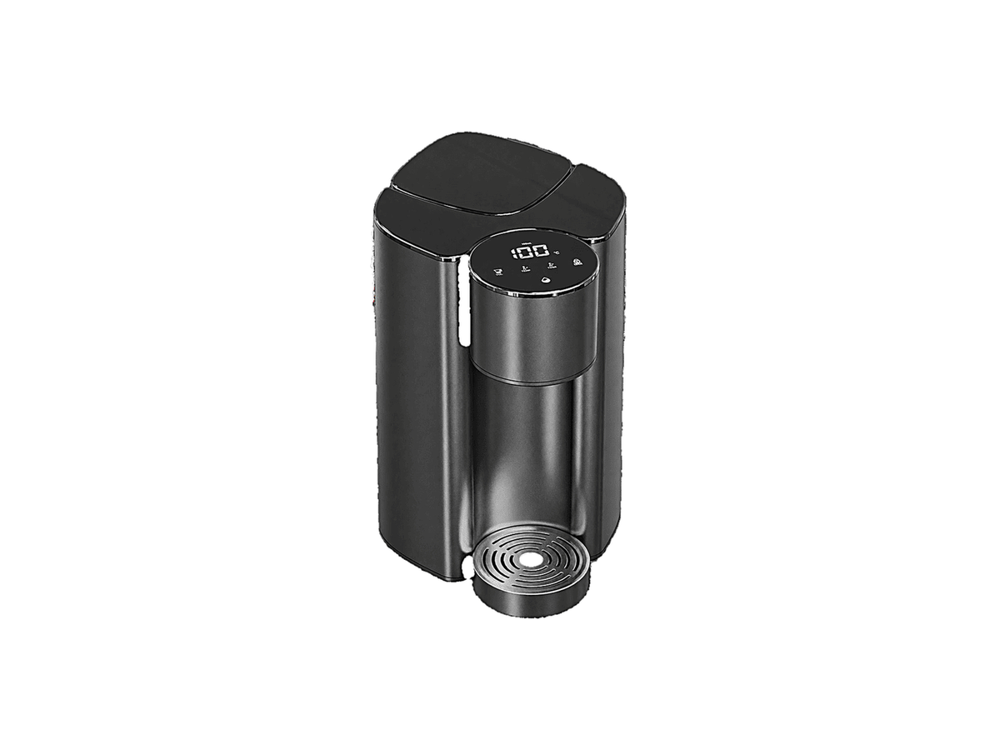

Bancada
BancadaRP-C07
Purificador RO com jarra aquecedora
SKU: RP-C07
MOQ: confirmar ao consultar
Início/Produtos/Sistemas de bancada/ RP-C03

Sistemas de bancada
Purificador instantâneo de água quente sem instalação (AM101A-03L)
RP-C03 — Purificador instantâneo de água quente sem instalação. Especificação principal: Filtração em 4 estágios; sem RO. As especificações são confirmadas por modelo e pedido.
Solicitar orçamento para RP-C03
A tensão / frequência é configurável para o país de destino. Outras configurações são confirmadas por pedido.
RP-C03 é um purificador instantâneo de água quente sem instalação (AM101A-03L) que não precisa de instalação hidráulica. Utiliza filtração em 4 estágios sem membrana RO, aquece a água em aprox. 3 segundos e oferece 7 ajustes de temperatura a partir de um tanque removível de 2,7 L. Com 283 × 210 × 312 mm e 2400 W, é uma unidade compacta de bancada para compradores que querem água quente sob demanda sem instalar um sistema RO.
Qual é a quantidade mínima de pedido?
O primeiro pedido é de 200 unidades por modelo, e os pedidos de reposição são de 500 unidades.
Posso pedir uma amostra antes de um pedido em volume?
Sim. As amostras ficam prontas em 15 dias, e a taxa da amostra é reembolsada no seu primeiro pedido em grande quantidade. Os pedidos em grande quantidade levam 40 dias após a aprovação da amostra e são enviados FOB Shenzhen.
Precisa de ligação de água?
Não. Não requer instalação hidráulica — encha o tanque removível de água bruta de 2.7 L. Usa filtração em 4 estágios sem membrana RO.
Uma opção — cotar como RP-C03 (instantâneo-quente).
Passe o cursor sobre a imagem de uma variante para ver suas especificações. Em telas sensíveis ao toque, toque em uma imagem.
Especificações completas de cada variante, lado a lado. A tabela de especificações mais abaixo mostra os valores de RP-C03.
| Especificação | RP-C03-1 — água quente instantânea (AM101A-03L) |
|---|---|
| Filtração | 4 estágios; sem RO |
| Membrana RO | Sem RO |
| Tanque de água bruta | 2.7 L; removível |
| Aquecimento | Água quente instantânea, aprox. 3 segundos |
| Ajustes de temperatura | 7 |
| Potência nominal | 2400 W |
| Fluxo de água purificada | A confirmar por pedido |
| Dimensões (C×L×A) | 283 × 210 × 312 mm |
| Instalação | Não requer instalação hidráulica |
| Tensão / frequência | Configurável para o país de destino |
9 linhas de especificações do catálogo da ROPureOEM.
| Filtração | 4 estágios; sem RO |
|---|---|
| Tanque de água | 2.7 L; removível |
| Tempo de aquecimento | Aprox. 3 segundos |
| Ajustes de temperatura | 7 |
| Potência nominal | 2400 W |
| Dimensões | 283 × 210 × 312 mm |
| Instalação | Não requer instalação hidráulica |
| Tensão / frequência | Configurável para o país de destino |
| Outras configurações | A confirmar por pedido |
As especificações são retiradas do catálogo ROPureOEM. Quando um valor ainda não está confirmado, ele é listado como “Confirmado por pedido” — não publicamos valores não confirmados.
BancadaPurificador RO com jarra aquecedora
SKU: RP-C07
MOQ: confirmar ao consultar
 Bancada
BancadaPurificador de bancada de cartucho tudo em um
SKU: RP-C08
MOQ: confirmar ao consultar
 Bancada
BancadaPurificador RO com gelo, água quente e fria
SKU: RP-C09
MOQ: confirmar ao consultar
 Bancada
BancadaRO de bancada com refrigeração por compressor
SKU: RP-C10
MOQ: confirmar ao consultar